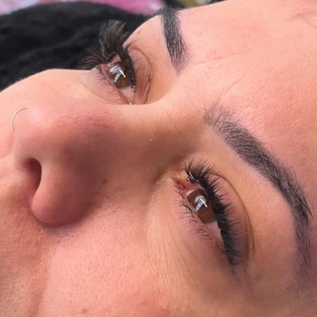
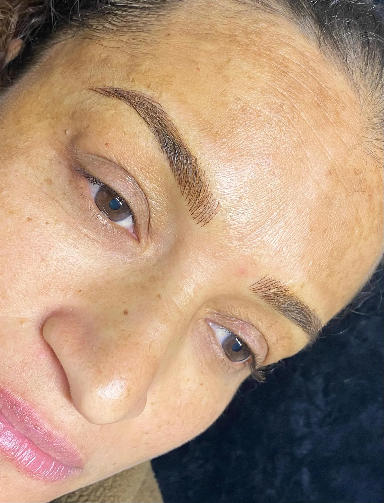
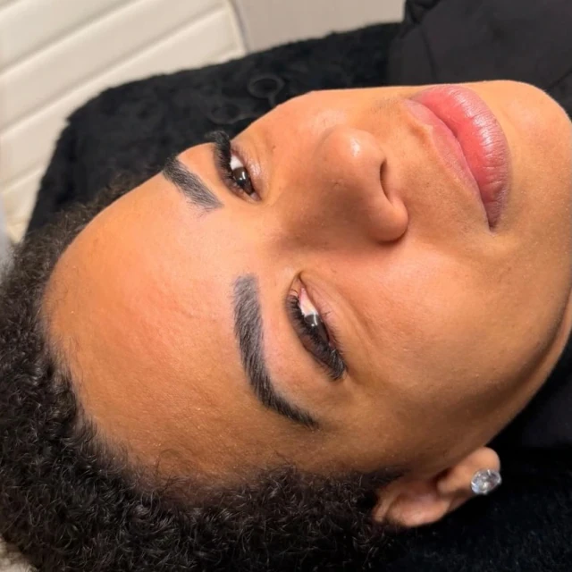
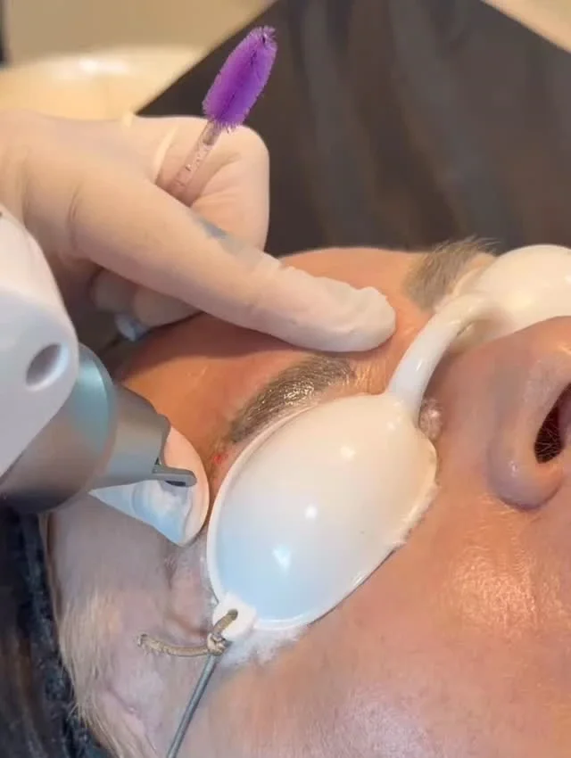
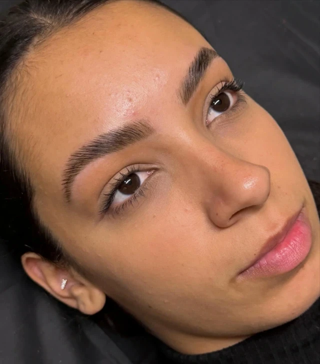
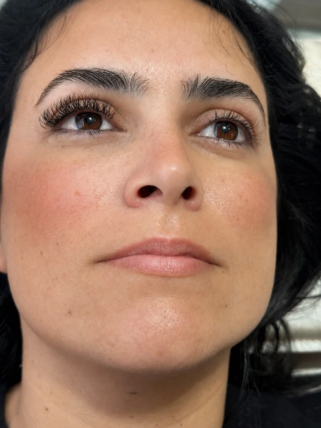
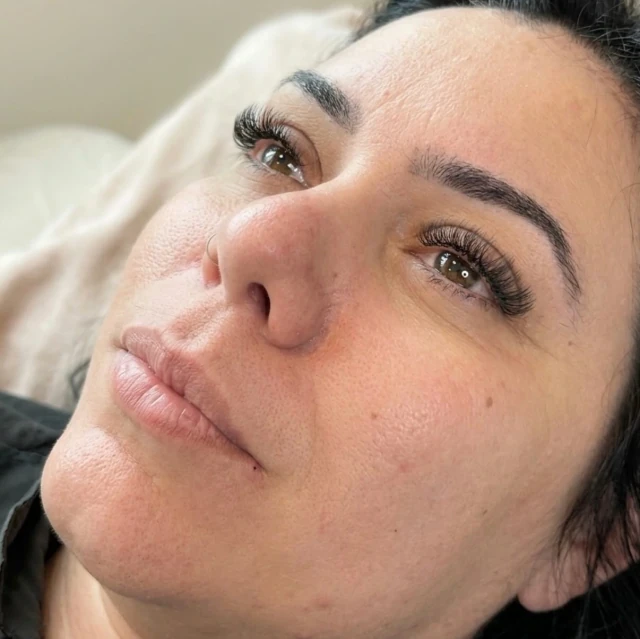
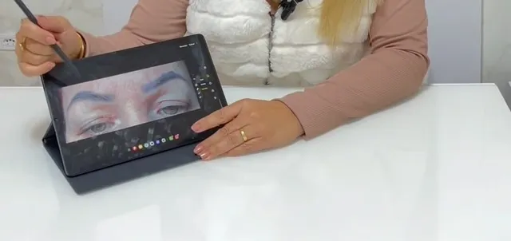
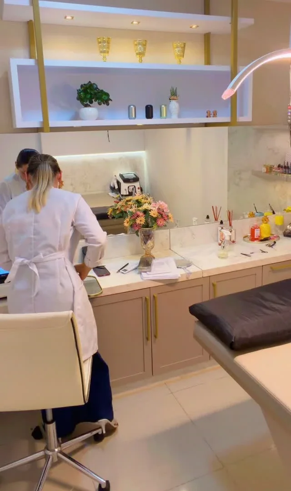
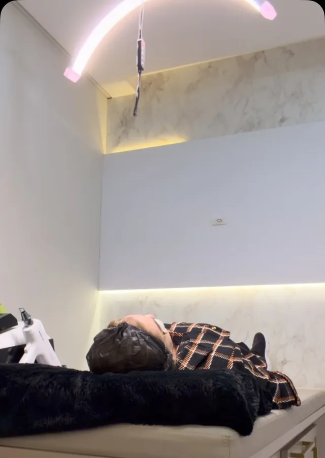

Micropigmentação de sobrancelhas
Pigmento aplicado na camada superficial da pele para preencher e redesenhar as sobrancelhas. O desenho é estudado com você antes, respeitando os traços do seu rosto.
Clínica estética · Capivari de Baixo/SC
Micropigmentação, remoção de micropigmentação a laser, preenchimento, harmonização e estética facial, com um atendimento que começa por entender o seu rosto.
Talita Ribeiromicropigmentadora
Rua Casemiro de Abreu, 677 · Centro, Capivari de Baixo

Seis cuidados, um atendimento
Conheça cada cuidado e chame a Talita sobre o que faz sentido para você.

Pigmento aplicado na camada superficial da pele para preencher e redesenhar as sobrancelhas. O desenho é estudado com você antes, respeitando os traços do seu rosto.

Pigmentação dos lábios para realçar cor e contorno de forma suave. A tonalidade é escolhida na avaliação, junto com você, considerando o tom natural da sua pele.

Para quem deseja clarear uma micropigmentação antiga ou que não agrada mais. A quantidade de sessões e a resposta da pele variam de pessoa para pessoa e são conversadas na avaliação.

Procedimento injetável para repor volume ou definir contornos em regiões do rosto. A indicação, a região e a quantidade dependem da avaliação individual.

Um conjunto de procedimentos planejados para equilibrar as proporções do rosto. O plano é definido depois de uma avaliação cuidadosa, sempre a partir dos seus traços.

Cuidados com a pele do rosto, escolhidos conforme a necessidade de cada pele e acompanhados de orientações para manter a rotina em casa.
Fotos: registros de trabalhos publicados no perfil, sem relação com o cuidado descrito ao lado. Indicação e plano definidos em avaliação; cada resultado é individual.
Como é o atendimento

Você conta o que deseja pelo WhatsApp ou pelo Direct do Instagram. A partir daí, vocês combinam o momento da avaliação.
Talita observa o rosto, ouve suas expectativas e, quando a técnica pede, desenha e planeja com você antes de qualquer procedimento.
Com o plano aprovado por você, o procedimento é realizado e você recebe as orientações de cuidado para os dias seguintes.
O espaço
Atendimento com hora marcada, num ambiente preparado para os procedimentos do rosto.
Rua Casemiro de Abreu, 677Centro · Capivari de Baixo/SC
Ver como chegar no mapa

Contato
Sua mensagemOlá, Talita! Vim pelo site e gostaria de conversar sobre micropigmentação de sobrancelhas.
O link abre a conversa com a Talita no WhatsApp. É só colar a mensagem copiada, se quiser; nada é enviado sem você confirmar.